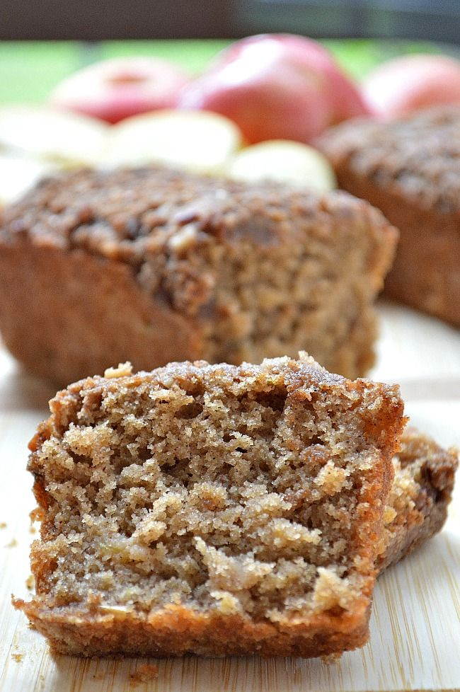

Ithaca Apple Bread

Ingredients
This is a modified verson of the apple bread recipe found in the famous 'Enchanted Broccoli Forest' cookbook, made by the Moosewood restaurant in Ithaca,NY.
- 4 cups coarsely grated unpeeled apple (from about 1.75 pounds apples)
- 1/4 cup fresh lemon juice
- 2 teaspoons lemon zest
- 1/2 cup packed light brown sugar
- 8 tablespoons (1 stick) butter, melted and slightly cooled
- 3 large eggs
- 1/2 cup buttermilk
- 2 teaspoons vanilla extract
- 2 cups unbleached white flour
- 2 cups whole wheat pastry flour
- 1 tablespoon baking powder
- 1/2 teaspoon salt
- 1/2 teaspoon cardamom
- 1 teaspoon cinnamon
- 1/4 teaspoon nutmeg
Directions
- Preheat the oven to 375 degrees. Lightly grease 2 medium loaf pans. (The bread doesn’t rise too much, so the pans can be fairly shallow.)
- Combine the apple, lemon juice, and lemon zest in a medium bowl. In a separate bowl, beat together the brown sugar, butter, eggs, buttermilk, and vanilla. Pour this mixture over the apple and stir to combine.
- In a large mixing bowl, whisk together the flours, baking powder, salt, cardamom, cinnamon, and nutmeg. Pour the apple mixture into the dry mixture and combine with a few strong, swift strokes. Divide the batter between the loaf pans and bake for 50 minutes to an hour, or until a cake tester or toothpick, when inserted, comes out clean. Remove from the baking pans immediately and let the bread cool completely before eating.